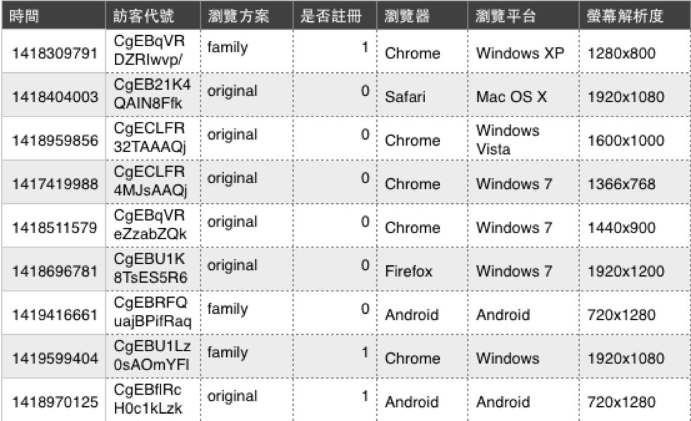
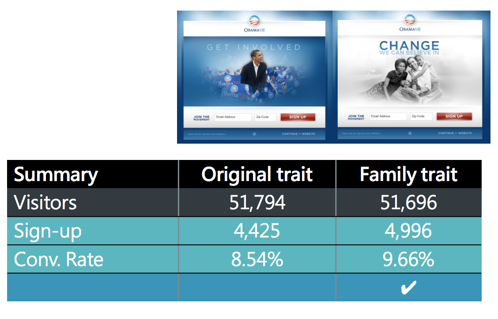
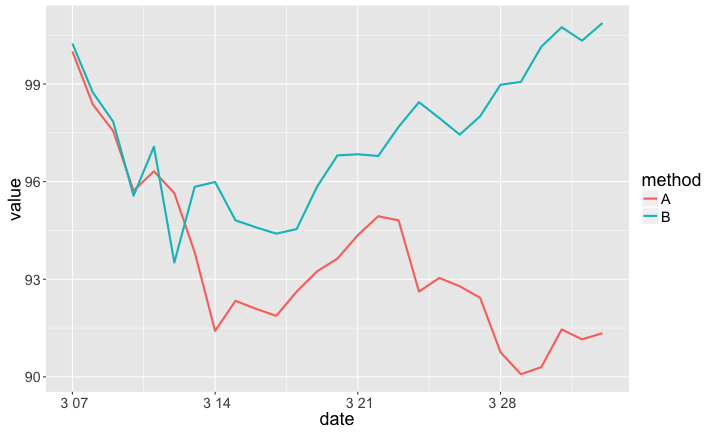
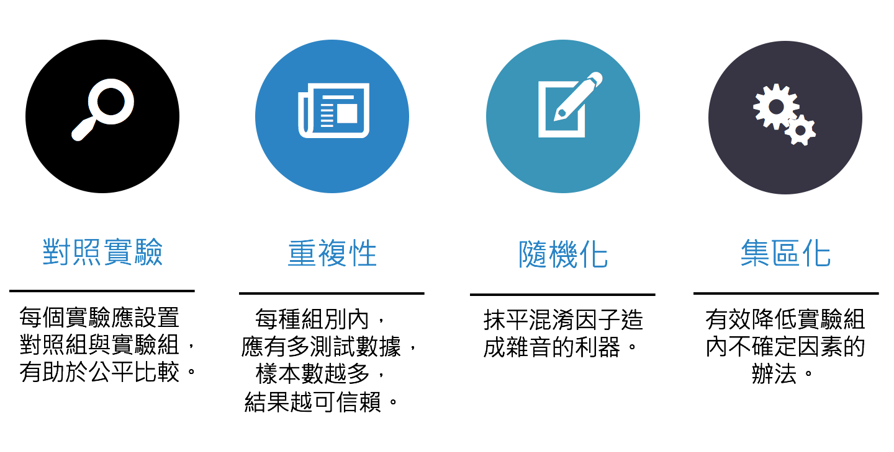
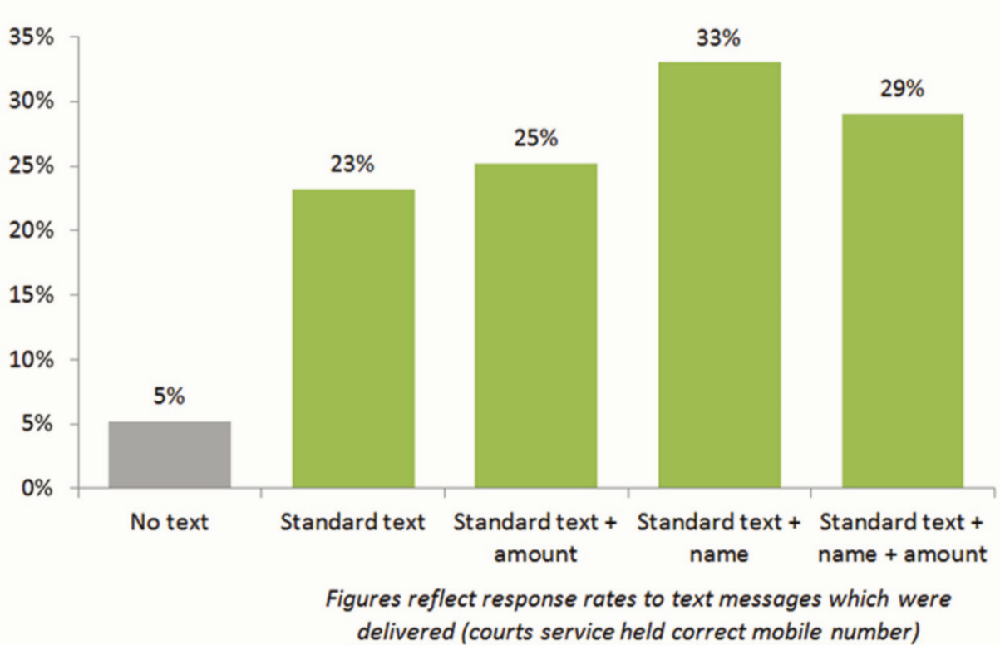
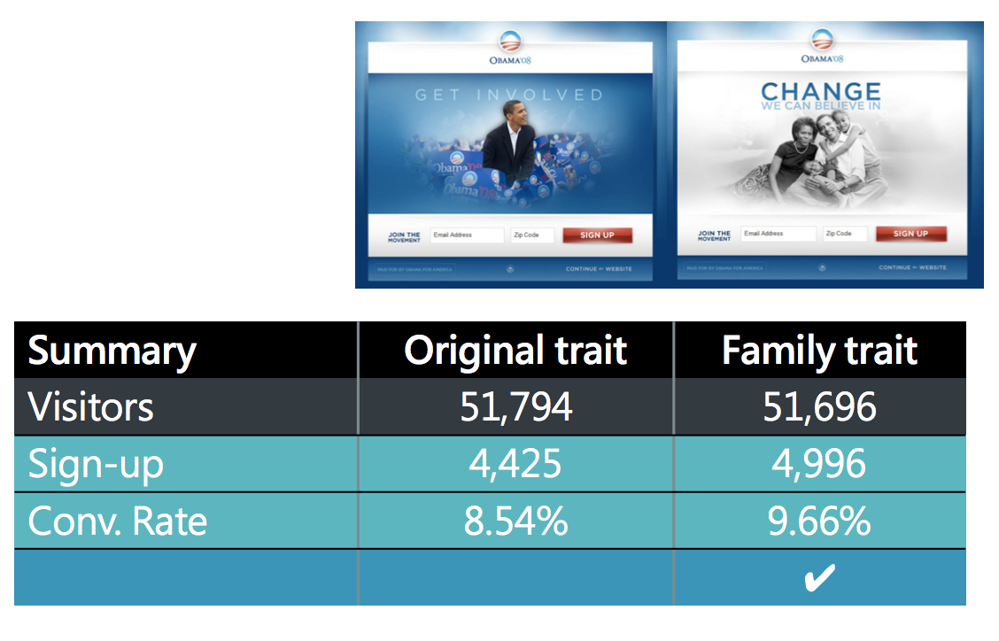
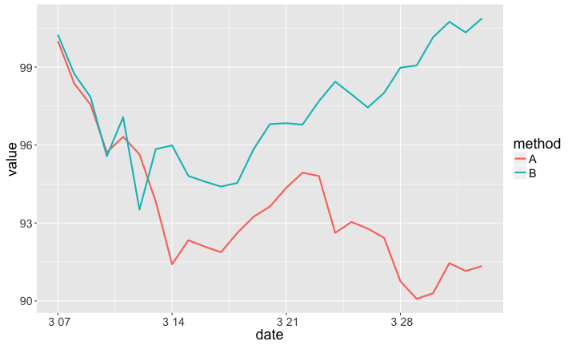
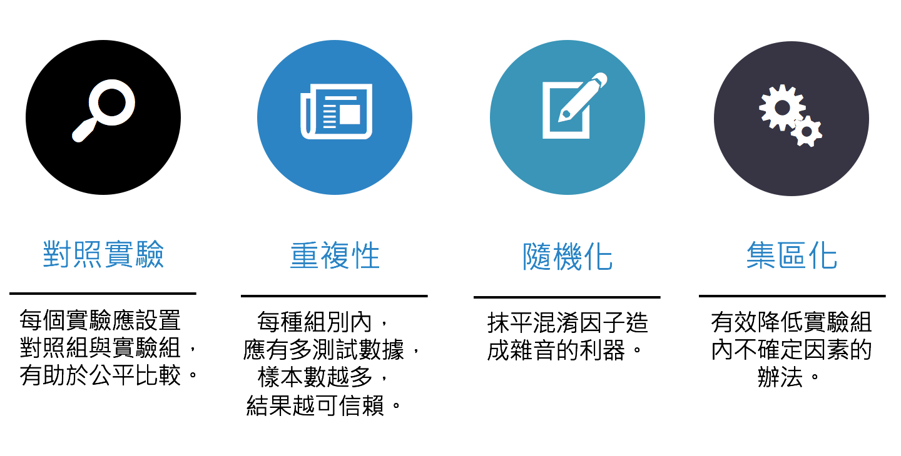
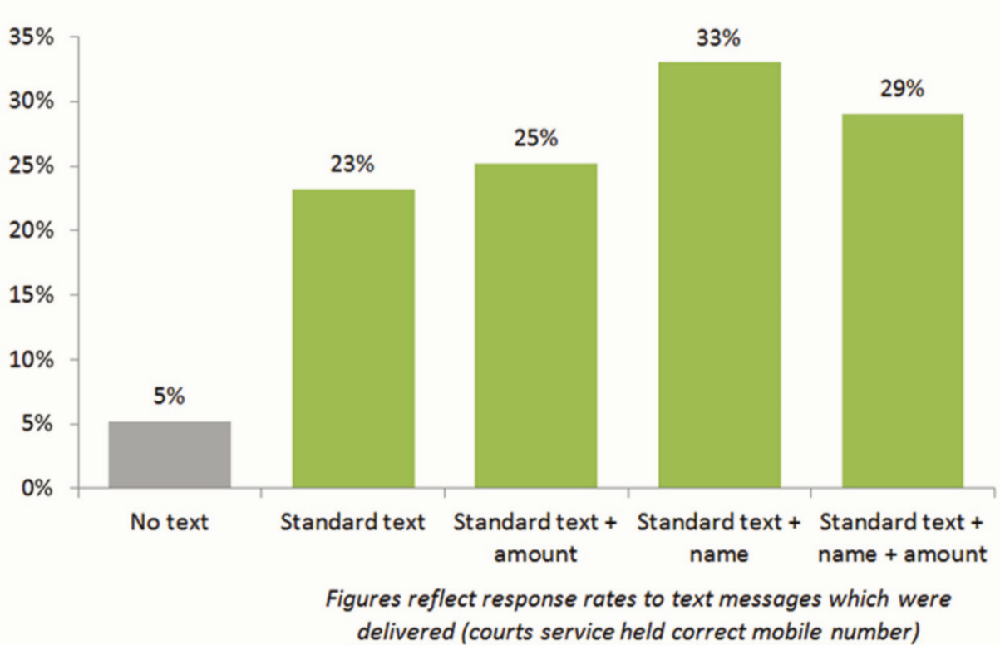

 歐巴馬競選網站主視覺實驗 - 實驗結果  關於A/B Testing 何謂AB測試? AB測試如何運作? AB測試為什麼該做？ 何謂AB測試 www.optimizely.com AB測試如何運作  AB測試為什麼該做 免窮理：don't necessarily know 'what works' 講證據：don't guess anymore 很簡單：don't have to be complicated or difficult to run 更經濟：don't have to cost a lot of money AB測試基本原則  更多實務案例 商品陳列也有A/B Testing 陳列畫面影響商品價值實驗 情境1. 用來裝飾房間的中國結 http://goo.gl/qxijE8 整齊的中國結 凌亂的中國結 陳列畫面影響商品價值實驗 情境2. 用來做課堂拆解練習的中國結 http://goo.gl/qxijE8 整齊的中國結 凌亂的中國結 提升慈善捐款的A/B Testing 哪種策略更能刺激捐款？ 幫助法院討債的A/B Testing 討債簡訊如信寫？  https://goo.gl/yMe9jO Advanced A/B Testing 檢定水準 樣本數 / 測試時程 多重檢定 統計顯著 vs. 物理顯著 (商業顯著) 1 2 3 4 5 6 7 8 9 10 11 12 13 14 15 16 17
 關於A/B Testing 何謂AB測試? AB測試如何運作? AB測試為什麼該做？ 何謂AB測試 www.optimizely.com AB測試如何運作  AB測試為什麼該做 免窮理：don't necessarily know 'what works' 講證據：don't guess anymore 很簡單：don't have to be complicated or difficult to run 更經濟：don't have to cost a lot of money AB測試基本原則  更多實務案例 商品陳列也有A/B Testing 陳列畫面影響商品價值實驗 情境1. 用來裝飾房間的中國結 http://goo.gl/qxijE8 整齊的中國結 凌亂的中國結 陳列畫面影響商品價值實驗 情境2. 用來做課堂拆解練習的中國結 http://goo.gl/qxijE8 整齊的中國結 凌亂的中國結 提升慈善捐款的A/B Testing 哪種策略更能刺激捐款？ 幫助法院討債的A/B Testing 討債簡訊如信寫？  https://goo.gl/yMe9jO Advanced A/B Testing 檢定水準 樣本數 / 測試時程 多重檢定 統計顯著 vs. 物理顯著 (商業顯著) 1 2 3 4 5 6 7 8 9 10 11 12 13 14 15 16 17
免窮理：don't necessarily know 'what works' 講證據：don't guess anymore 很簡單：don't have to be complicated or difficult to run 更經濟：don't have to cost a lot of money